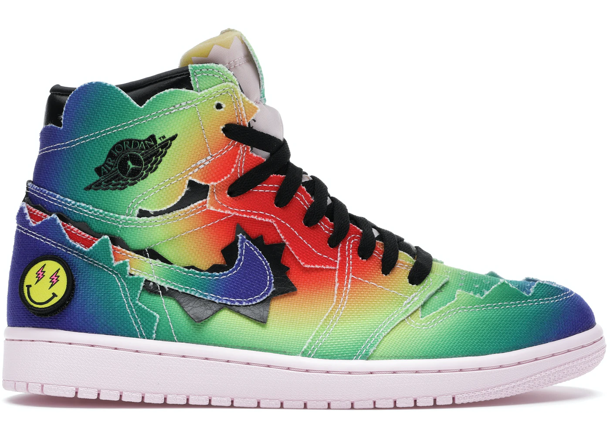

Inaugurada en 1997, Colette era una revolucionaria boutique parisina de alta moda. Ropa de calle, y Accesorios. El Air Jordan 1 Collette, creada inicialmente para los empleados de la tienda, es considerado uno de los colores más raros de Nike Air Jordan.

Las Dior x Air Jordan 1 son unas sneakers muy diferentes a las Jordan habituales. Primero, porque se
fabrican en Italia y no en Vietnam o China; segundo, porque en la parte superior blanca y gris aparece
el logo de Dior perforado en el mismísimo e icónico logotipo Wings de las zapatillas de Michael
Jordan.

Sin duda, las Air Jordan 1 de J Balvin son las últimas con este modelo en salir en este 2020.
La primera vez que vimos este modelo fue en enero, durante la actuación de la Super Bowl en la que
colombiano las llevó puestas y compartió escenario con Jennifer López y Bad Bunny.